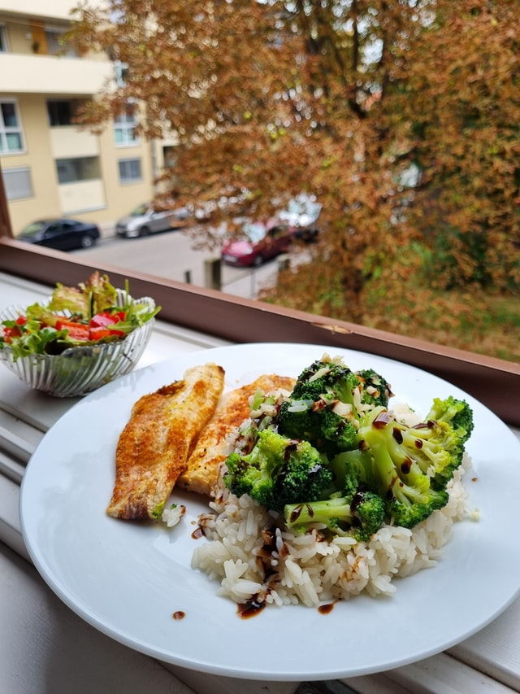

Balsamic Chicken

Description
A tasty, easy-to-make chicken dish
Ingredients
- 1/3 cup balsamic vinegar
- 1/2 cup chicken broth
- 2 tablespoons white sugar
- 1 teaspoon vanilla extract
- 1 clove of garlic, minced
- 1 teaspoon baking soda
- 1 teaspoon dried italian herb seasoning
- 4 skinless, boneless chicken breast halves
- 1 tablespoon olive oil
Steps
- Whisk together the balsamic vinegar, chicken broth, sugar, garlic, and Italian seasoning in a bowl, place the chicken breasts in the marinade, and marinate for 10 minutes on each side.
- Heat the olive oil in a large skillet over medium-high heat.
- Remove the chicken from the marinade and reserve the marinade.
- Place the chicken in the heated pan and cook until they start to brown and are no longer pink inside, about 7 minutes per side.
- Pour the marinade into the skillet, and cook until it thickens slightly, turning the chicken breasts over once or twice, about 5 minutes.
Back to Homepage